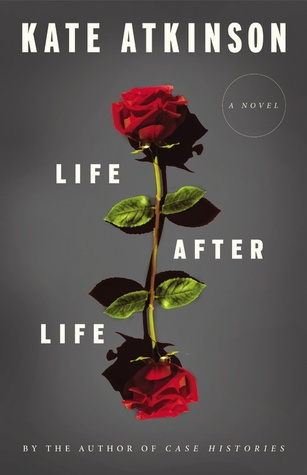
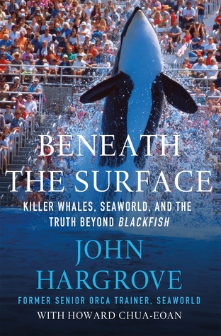
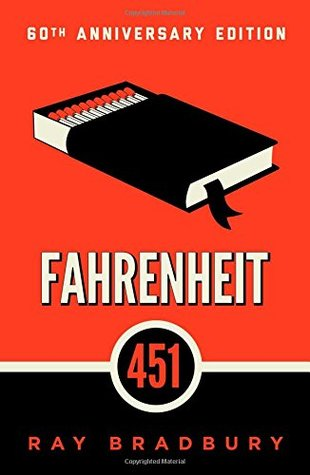

So, you want to read a book!
Are you looking for a new book to get you back into the reading game? Intimidated by the lists of books on the Amazon storefront? Lost in the stacks of your used bookstore? Never fear! Eliminate the pressure by letting me recommend you a great book to read
What are you in the mood for....?
Lauren, I want to read some page turning historical fiction!
Perfect! I love historical fiction. Great choice. You should read:
Life After Life by Kate Atkinson

Plot Synopsis from Goodreads:
On a cold and snowy night in 1910, Ursula Todd is born to an English banker and his wife. She dies before
she can draw her first breath. On the same cold and snowy night, Ursula Todd is born, lets out a lusty wail and embarks upon a life that will be,
to say the least, unusual. For as she grows, she also dies repeatedly in a variety of ways, while the young century marches on
towards its second cataclysmic world war
What I loved about this book:
The characters, the time period, and the examination of the tenuous nature of time and life combine to make this my
favorite book that I have read all year. It's sequel, A God in Ruins, is equally excellent and should not be missed.
Lauren, I want to read a non-fiction book about the mistreatment of Orcas!
Weirdly specific! Conveniently, I recently read a book that fits that bill. You should read:
Beneath the Surface: Killer Whales, SeaWorld, and the Truth Beyond Blackfish by John Hargrove

Plot Synopsis from Goodreads:
Over the course of two decades, John Hargrove worked with 20 different whales on two continents and at two of SeaWorlds
U.S facilities. For Hargrove, becoming an orca trainer fulfilled a childhood dream. However, as his experience with the whales deepened, Hargrove came to doubt that
their needs could ever be met in captivity. When two fellow trainers were killed by orcas in marine parks, Hargrove decided that SeaWorlds wildly popular programs were
both detrimental to the whales and ultimately unsafe for trainers
What I loved about this book:
A chilling and sad tale about the treatment of Orcas at SeaWorld that will make you never want to visit the parks again.
You should also watch the companion documentary, Blackfish (which is available on Netflix), which first interested me in this topic. John Hargrove tells a compelling story
and his love for the animals that he worked with shines through. The writing is captivating, and I finished this book in one day.
Lauren, I'm not depressed enough by the news & I want to read a book that will make the future seem even more bleak!
Are you sure about that? Well, at least you are reading books. Did you know that 28% of Americans haven't read a book in the past year? That will seem relevant once you hear my recommendation. You should read:
Fahrenheit 451 by Ray Bradbury

Plot Synopsis from Goodreads:
Set in the 24th century, Fahrenheit 451 tells the story of Guy Montag. At first, Montag takes pleasure in his profession as a fireman, burning illegally owned books and the homes
of their owners. However, Montag soon begins to question the value of his profession and, in turn, his life. Throughout the novel, Montag struggles to with his existence, eventually fleeing his oppressive, censored society
and joining an underground network of intellectuals. With his newfound friends, Montag witnesses the atomic destruction of his former city and dedicates himself to rebuilding a literate and cultural society.
What I loved about this book:
Even though this book was published over half a century ago, it seems even more relevant now. One wonders if Ray Bradbury didn't have some
clairvoyant power. It is disturbing how within reach the future that Bradbury describes can seem. Laziness and ignorance magnified to a dangerous degree. American citizens watching
meaningless sound & color on their wall-to-wall televisions, falling asleep with their "seashells" in their ears. This is a world that seems all too real in 2017.